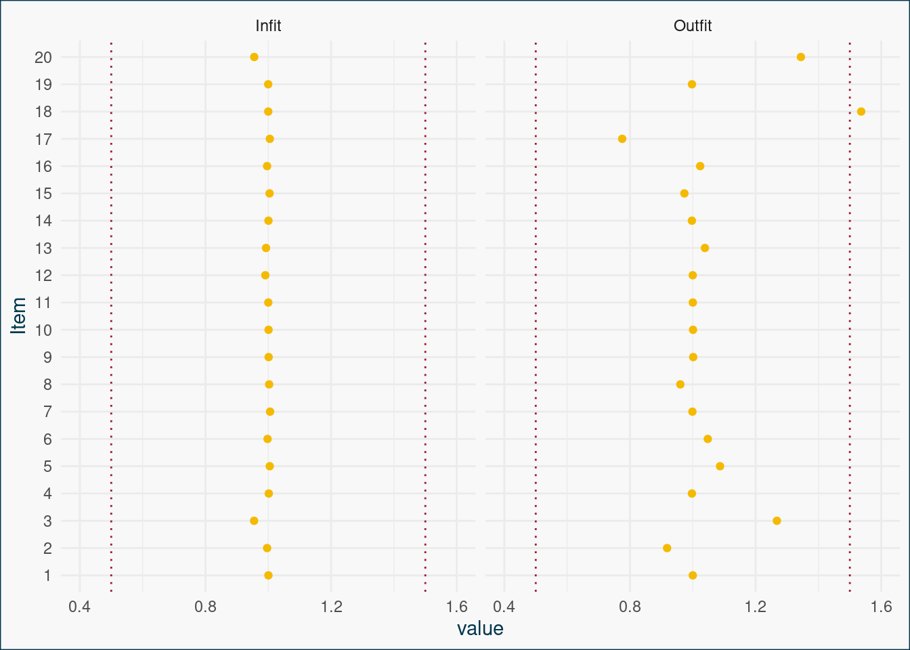

Modellselektion
Übung
Das 2PL Modell haben wir schon gefittet (und wir wissen ja, dass das richtig ist, weil wir die Daten selbst generiert haben). Wie aber verhalten sich das 1PL Modell und das 3PL Modell?
1 Modellevaluation
1.1 2PL
1.1.1 Erwartet vs. beobachtet
Als Baseline schauen wir uns ein paar Fit-Eigenschaften von unserem 2PL Modell an, das wir so gefittet hatten:
Zuerst interessiert uns wie gut unsere tatsächlichen Werte mit den Modellerwarungen übereinstimmen. Nutze folgende Funktion um die Itemplots zu erstellen (kommt aus TAM):
plot(sim_dat_2PL,
type = "items",
export = FALSE,
observed = TRUE,
package = "graphics"
)Fällt dir etwas auf?
plot(sim_dat_2PL,
type = "items",
export = FALSE,
observed = TRUE,
package = "graphics"
)Iteration in WLE/MLE estimation 1 | Maximal change 2.2568
Iteration in WLE/MLE estimation 2 | Maximal change 0.6867
Iteration in WLE/MLE estimation 3 | Maximal change 0.3037
Iteration in WLE/MLE estimation 4 | Maximal change 0.1007
Iteration in WLE/MLE estimation 5 | Maximal change 0.0286
Iteration in WLE/MLE estimation 6 | Maximal change 0.0077
Iteration in WLE/MLE estimation 7 | Maximal change 0.002
Iteration in WLE/MLE estimation 8 | Maximal change 5e-04
Iteration in WLE/MLE estimation 9 | Maximal change 1e-04
Iteration in WLE/MLE estimation 10 | Maximal change 0
----
WLE Reliability= 0.593 


1.1.2 Itemfit
Als nächstes schauen wir uns die Infit und Outfit - Werte der Items an. Wende dafür die Funktion tam.fit() auf dein gefittetes TAM-Modell an.
fit_2PL <- tam.fit(sim_dat_2PL)Item fit calculation based on 5 simulations
|**********|
|----------|fit_2PL$itemfit parameter Outfit Outfit_t Outfit_p Outfit_pholm Infit
1 1 0.9999849 -0.01471811 9.882571e-01 1.000000e+00 0.9999954
2 2 0.9997788 -0.08780806 9.300292e-01 1.000000e+00 0.9999890
3 3 0.9991179 -0.27320216 7.846978e-01 1.000000e+00 0.9999681
4 4 1.0007133 0.21236771 8.318202e-01 1.000000e+00 1.0003495
5 5 0.9987075 -0.40836080 6.830088e-01 1.000000e+00 0.9994475
6 6 0.9976693 -0.79906240 4.242542e-01 1.000000e+00 1.0002015
7 7 0.9977946 -0.73425979 4.627904e-01 1.000000e+00 0.9986748
8 8 0.9986908 -0.36714053 7.135142e-01 1.000000e+00 0.9990641
9 9 1.0096716 2.04958045 4.040539e-02 4.040539e-01 1.0003451
10 10 1.0107590 1.53761602 1.241425e-01 1.000000e+00 1.0017305
11 11 0.9757218 -2.41782446 1.561361e-02 1.717497e-01 1.0026309
12 12 0.9255940 -4.68909899 2.744106e-06 3.567338e-05 0.9997632
13 13 0.8757973 -4.25801274 2.062522e-05 2.475026e-04 0.9969156
Infit_t Infit_p Infit_pholm
1 -0.004229785 0.9966251 1
2 -0.003559338 0.9971601 1
3 -0.009162919 0.9926892 1
4 0.104631967 0.9166678 1
5 -0.174159386 0.8617402 1
6 0.068610434 0.9452997 1
7 -0.440163920 0.6598184 1
8 -0.262163074 0.7931957 1
9 0.074978173 0.9402321 1
10 0.259697030 0.7950975 1
11 0.261121947 0.7939985 1
12 -0.008516819 0.9932046 1
13 -0.091170083 0.9273574 1Manchmal kann es auch helfen, sich das ganze als Plot ausgeben zu lassen:
Code
# Definieren einer eigenen Plot-Funkktion
plot_infit_outfit <- function(tam_obj){
fit_tam <- tam.fit(tam_obj)$itemfit
fit_plotdat <- fit_tam %>%
# Als Faktor umwandeln, damit die Sortierung im Plot stimmt
mutate(Item = factor(parameter, levels = unique(parameter[order(as.numeric(parameter))]))) %>%
select(Item, Outfit, Infit) %>%
pivot_longer(cols = c(Outfit, Infit), names_to = "fit", values_to = "value")
ggplot(fit_plotdat, aes(x = value, y = Item)) +
geom_point(colour = "#F4BA02") +
facet_grid(. ~ fit, scales = "fixed") +
xlim(0.4, 1.6) +
theme_bg() +
geom_vline(xintercept = 0.5, linetype = "dotted", colour = "#9B1B34") +
geom_vline(xintercept = 1.5, linetype = "dotted", colour = "#9B1B34")
}
plot_infit_outfit(sim_dat_2PL)Item fit calculation based on 5 simulations
|**********|
|----------|
Wenig überraschend sind die Werte fast perfekt.
1.2 1PL
Jetzt wollen wir uns noch zwei alternative Modelle anschauen: Das 1PL Modell und das 3PL Modell. Fitte das 1PL mit TAM und schaue dir ebenfalls die Itemplots und die Fit-Statistiken an.
sim_dat_1PL <- tam(sim_dat_wide %>% select(-sub_id), irtmodel = "1PL", verbose = FALSE)
plot(sim_dat_1PL,
type = "items",
export = FALSE,
observed = TRUE,
package = "graphics"
)Iteration in WLE/MLE estimation 1 | Maximal change 2.6387
Iteration in WLE/MLE estimation 2 | Maximal change 1.1571
Iteration in WLE/MLE estimation 3 | Maximal change 0.118
Iteration in WLE/MLE estimation 4 | Maximal change 0.0371
Iteration in WLE/MLE estimation 5 | Maximal change 0.0132
Iteration in WLE/MLE estimation 6 | Maximal change 0.0045
Iteration in WLE/MLE estimation 7 | Maximal change 0.0016
Iteration in WLE/MLE estimation 8 | Maximal change 5e-04
Iteration in WLE/MLE estimation 9 | Maximal change 2e-04
Iteration in WLE/MLE estimation 10 | Maximal change 1e-04
----
WLE Reliability= 0.599 


Und die Infit und Outfitwerte, geplottet mit meiner eigenen Funktion (weiter oben definiert):
Code
plot_infit_outfit(sim_dat_1PL)Item fit calculation based on 5 simulations
|**********|
|----------|
Hier können wir schön sehen, dass der Fit schon deutlich abnimmt, wenn wir die Steigung ignorieren (die wir ja bewusst simuliert haben).
1.3 3PL
Fitte jetzt ein 3PL Modell. Nimm für die simulierten Daten eine 50 % Chance an, das Item durch raten zu lösen.
## Probably just instable because the data is wrong?
sim_dat_3PL <- tam.mml.3pl(sim_dat_wide %>% select(-sub_id),
verbose = FALSE, guess = rep(0.5, 13))
summary(sim_dat_3PL)
plot(sim_dat_3PL,
type = "items",
export = FALSE,
observed = TRUE,
package = "graphics"
)
tam.fit(sim_dat_3PL)
### Try mirt
library(mirt)
sim_dat_3PL <- mirt(sim_dat_wide %>% select(-sub_id), 1, itemtype = "3PL", verbose = FALSE, guess = rep(0.25, 13))
summary(sim_dat_3PL)
coef(sim_dat_3PL, IRTpars = TRUE, simplify = TRUE)
itemfit(sim_dat_3PL, fit_stats = "infit") # typical for Rasch modeling
# install.packages("devtools")
# devtools::install_github("masurp/ggmirt")
library(ggmirt)
itemfitPlot(sim_dat_3PL)
tracePlot(sim_dat_3PL)